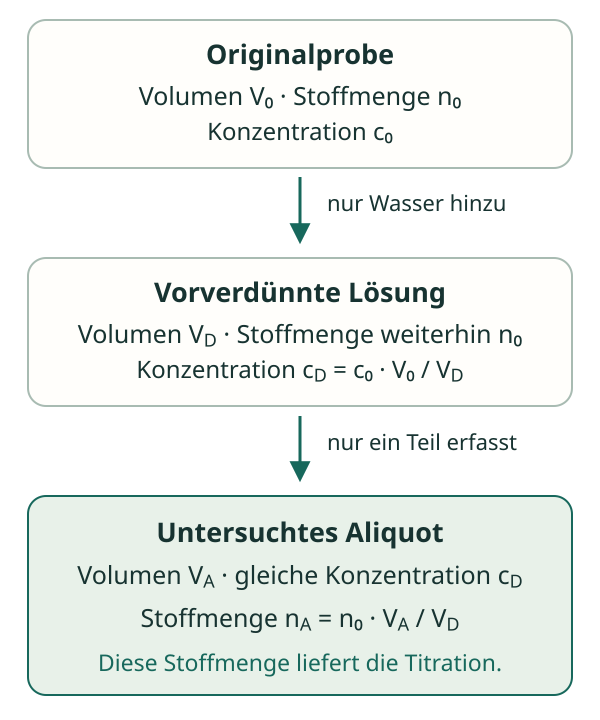

Die Probe hat eine Vorgeschichte
Eine Vorverdünnung mit anschließender Teilprobenentnahme bedeutet: Nur ein bekanntes Volumen der verdünnten Lösung wird ausgewertet. Diese Teilprobe heißt Aliquot. Die Titration erfasst daher nur den darin enthaltenen Anteil des untersuchten Stoffes.
Info bei Bedarf: Skizze und zwei gleichwertige Rechenwege

V₀ bezeichnet das ursprüngliche Probenvolumen vor der Verdünnung, VD das Endvolumen der verdünnten Lösung und VA das Volumen des untersuchten Aliquots. VD ist nicht die Menge des zugesetzten Wassers.
Weg 1 – über die Konzentration:
F = VD / V₀
c₀ = cD · F
F ist der Verdünnungsfaktor. Die ursprüngliche Konzentration c₀ ist bei einer Verdünnung größer als cD.
Weg 2 – über die Stoffmenge:
c₀ = n₀ / V₀
Der Faktor VD/VA rechnet eine Aliquot-Stoffmenge auf die gesamte verdünnte Lösung hoch. Er ist etwas anderes als der Verdünnungsfaktor VD/V₀.
Durchgerechnetes Beispiel: Essigsäure
10,00 mL einer Essigsäurelösung entsprechen nach Vorverdünnung 100,0 mL Lösung. Ein Aliquot von 20,00 mL dieser Lösung hat mit NaOH der Konzentration 0,1000 mol/L ein Äquivalenzvolumen von 16,00 mL. Gesucht ist c₀(CH₃COOH).
Wegen CH₃COOH + OH⁻ → CH₃COO⁻ + H₂O gilt im Aliquot:
= 0,001600 mol
= 0,08000 mol/L
c₀ = 0,08000 mol/L · 10,00
= 0,8000 mol/L
Zur Kontrolle: Die gesamte verdünnte Lösung enthält 1,600 mmol · (100,0/20,00) = 8,000 mmol Säure. Diese stammen aus den ursprünglichen 10,00 mL: 8,000 mmol / 10,00 mL = 0,8000 mol/L.
A · Zwei Rechenwege
Eine vorverdünnte Salzsäureprobe
Für eine reine Salzsäureprobe sind folgende Daten vorgegeben:
- ursprüngliches Probenvolumen V₀ = 5,00 mL,
- Endvolumen nach Vorverdünnung VD = 100,0 mL,
- untersuchtes Aliquot VA = 25,00 mL,
- c(NaOH) = 0,0200 mol/L, VE = 10,00 mL.
- Berechne die HCl-Stoffmenge im untersuchten Aliquot.
- Bestimme die Konzentration der verdünnten und der ursprünglichen Lösung.
- Kontrolliere die ursprüngliche Konzentration mit dem zweiten Rechenweg über die Stoffmenge.
A · Hilfe 1: Nur das Aliquot wird erfasst
Berechne zuerst nA mit der Maßlösung. Beziehe diese Stoffmenge auf 25,00 mL, um die Konzentration der verdünnten Lösung zu erhalten.
A · Hilfe 2: Welcher Faktor gehört wohin?
Für die Konzentration beträgt der Verdünnungsfaktor 100,0/5,00. Für die Hochrechnung der Stoffmenge vom Aliquot auf die ganze verdünnte Lösung beträgt der Faktor dagegen 100,0/25,00.
A · Musterlösung
= 0,000200 mol = 0,200 mmol
= 0,00800 mol/L
c₀ = 0,00800 mol/L · 20,0
= 0,160 mol/L
Kontrolle: Die gesamte verdünnte Lösung enthält 0,200 mmol · (100,0/25,00) = 0,800 mmol HCl. Bezogen auf die ursprünglichen 5,00 mL ergibt das ebenfalls 0,800 mmol / 5,00 mL = 0,160 mol/L.
B · Kombinieren
Bis zum Chloridgehalt in g/L
Eine chloridhaltige Originalprobe mit V₀ = 10,00 mL entspricht nach Vorverdünnung einem Endvolumen VD = 250,0 mL. Ein Aliquot von 50,00 mL hat mit Silbernitrat, c(AgNO₃) = 0,0100 mol/L, ein Äquivalenzvolumen von 8,00 mL.
Berechne c₀(Cl⁻) und β₀(Cl⁻) in g/L. Verwende M(Cl⁻) = 35,45 g/mol. Andere mit Ag⁺ reagierende Stoffe sind ausgeschlossen; das Verdünnungswasser enthält kein Chlorid.
B · Hilfe: Die Kette vollständig durchlaufen
Ag⁺ + Cl⁻ → AgCl liefert das Verhältnis 1 : 1. Rechne vom Aliquot zunächst auf cD, dann mit VD/V₀ auf c₀ und zuletzt mit β₀ = c₀ · M auf die Massenkonzentration.
B · Musterlösung
= 0,0000800 mol
= 0,00160 mol/L
= 0,0400 mol/L
= 1,418 g/L ≈ 1,42 g/L
Dieses Ergebnis beschreibt Chlorid in der Originalprobe. Es ist keine Aussage über den tatsächlichen NaCl-Gehalt, weil die Chloridquelle nicht festgelegt wurde.
C · Fehleranalyse
Zwei verschiedene Faktoren
„In Aufgabe A sind 25,00 mL von insgesamt 100,0 mL untersucht worden. Deshalb multipliziere ich cD = 0,00800 mol/L mit 4 und erhalte die ursprüngliche Konzentration.“
- Erkläre, wofür der Faktor 4 geeignet ist und warum die Aussage dennoch falsch ist.
- Vergleiche mit 5.4 Wasserzugabe: Was ist anders, wenn die ganze ursprüngliche Teilprobe nach Wasserzugabe untersucht wird?
C · Hilfe
Haben 25,00 mL und 100,0 mL derselben gleichmäßig gemischten Lösung unterschiedliche Konzentrationen oder unterschiedliche Stoffmengen? Welches Volumen der Originalprobe steckt in der gesamten verdünnten Lösung?
C · Musterlösung und Selbstkontrolle
Der Faktor 4 = 100,0/25,00 ist zur Hochrechnung der Stoffmenge geeignet: Die ganze verdünnte Lösung enthält viermal so viel HCl wie ihr Aliquot. Ihre Konzentration ist aber gleich, weil sich der Stoff gleichmäßig auf das Volumen verteilt.
Der Rückweg zur ursprünglichen Konzentration benötigt den Verdünnungsfaktor 100,0/5,00 = 20,0. Die vorgeschlagene Rechnung liefert 0,0320 mol/L und ist falsch; richtig sind 0,160 mol/L.
Bei 5.4 erfasst die Titration die gesamte Stoffmenge aus der ursprünglichen Teilprobe. Hier bei 5.5 erfasst sie nur einen Teil davon. Deshalb muss der bekannte Anteil berücksichtigt werden.
Kannst du V₀, VD und VA jeweils einem konkreten Zustand zuordnen? Führst du beim Zurückrechnen zu einer höheren ursprünglichen Konzentration?
Zurück zur Checkliste
Schließe die Hilfen und Lösungen. Erkläre deinen Rechenweg mit Einheiten und benenne bei jedem Ergebnis den Stoff und die zugehörige Probe.
Fachliche Quellen und Aufgabenmodell
- OpenStax, Chemistry 2e: 3.3 Molarity – Konzentrationsbezug und Stoffmengenerhaltung bei Verdünnungen.
- OpenStax, Chemistry 2e: 4.5 Quantitative Chemical Analysis – Stoffmengenverhältnisse am Äquivalenzpunkt.
- IUPAC Gold Book: Amount concentration – Stoffmenge eines Bestandteils bezogen auf das Volumen der Mischung.
- IUPAC Gold Book: Mass concentration – Masse eines Bestandteils bezogen auf das Volumen der Mischung. Hier wird das im Unterricht gebräuchliche Symbol β verwendet.
Eigenständig entwickelte Beispiele, Aufgaben und Lösungen. Alle Zahlen sind didaktische Vorgaben, keine Messdaten realer Proben. Die angegebenen Äquivalenzvolumina gelten als bereits korrekt ausgewertet; Reaktionen werden als quantitativ und ohne störende Nebenreaktionen behandelt.